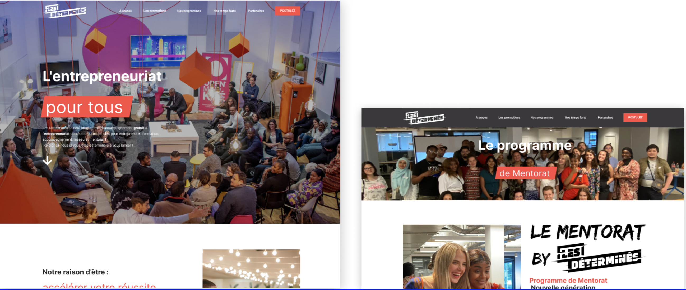

Instagram Reels
▶
Instagram Reels
▶
Journalisme · IA
Brut.IA
Création de contenu vidéo quotidien autour de l’intelligence artificielle, VivaTech, culture digitale et formats sociaux.
Mes projets
Deux facettes d’un même profil : la création de contenu social-first et la conception d’expériences digitales UX/UI.
Portfolio contenu · social media · sport · branding
Création de contenus social-first, formats courts, activations sportives, brand content et storytelling vidéo pour les marques.
Instagram Reels
▶
Journalisme · IA
Création de contenu vidéo quotidien autour de l’intelligence artificielle, VivaTech, culture digitale et formats sociaux.
 Sport Content
▶
Sport Content
▶
Sport · Rugby
Contenus social media autour du rugby, de la marque et de l’activation sportive.
 Reels Series
▶
Reels Series
▶
Activation
Série de contenus courts pour les réseaux sociaux, autour d’univers sportifs et de moments événementiels.
 Football / Rugby
▶
Football / Rugby
▶
Sport
Contenus pour des activations sportives, football, rugby et événements de marque.
 Corporate Reels
▶
Corporate Reels
▶
Corporate
Contenus social media pour valoriser des prises de parole, formats verticaux et capsules de communication.
 YouTube Film
▶
YouTube Film
▶
Brand content
Contenu vidéo YouTube autour d’une collaboration marque × football.
Branding
Direction artistique, univers visuel et accompagnement autour du Salon Nautique de Paris.
Startup · Maroc
Application mobile anti-gaspillage alimentaire inspirée de Too Good To Go, conçue pour le marché marocain.
Applications · sites web · refontes · expérience utilisateur
Une sélection de projets d’interfaces : applications mobiles, refontes de sites, parcours utilisateurs, direction artistique et expérience digitale.
 Application mobile
Application mobile
UX/UI · App citoyenne · IA
Application ludique dédiée à la lutte contre la désinformation : quiz interactifs, vérification d’articles et contenus fiables.
 Landing page
Landing page
UX/UI · E-commerce · Campaign
Repenser une page d’accueil Adidas pour valoriser une collaboration entre Stan Smith et Will Smith.

Site associationUX/UI · Association · Web
Site internet pour une association qui accompagne les jeunes entrepreneurs issus de quartiers populaires.
 Application sportive
Application sportive
UX/UI · Sport · Mobile app
Application sportive pensée pour la marque : entraînements, progression, programmes personnalisés et engagement utilisateur.
 Refonte site web
Refonte site web
UX/UI · Refonte · Sport de glisse
Refonte complète du site d’une école spécialisée dans le wingfoil : expérience plus moderne, intuitive et attractive.